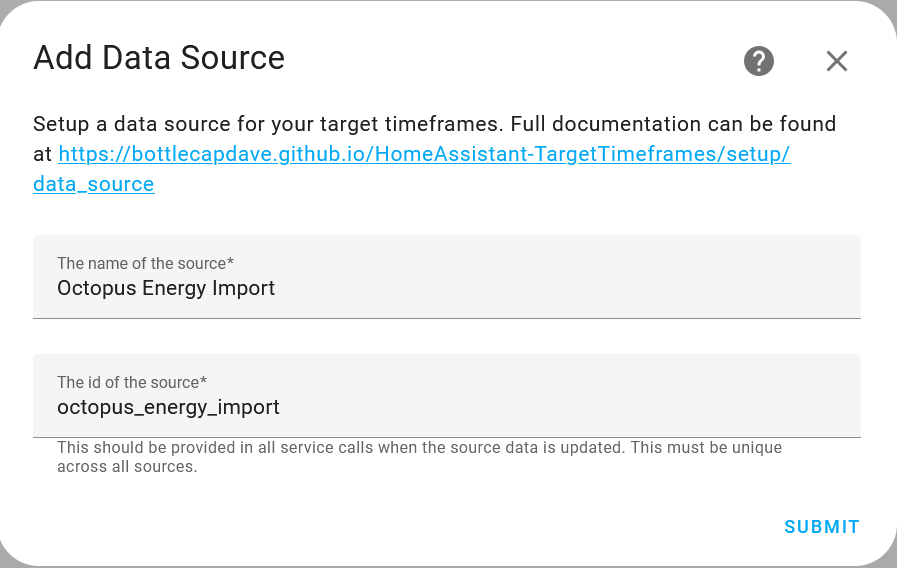
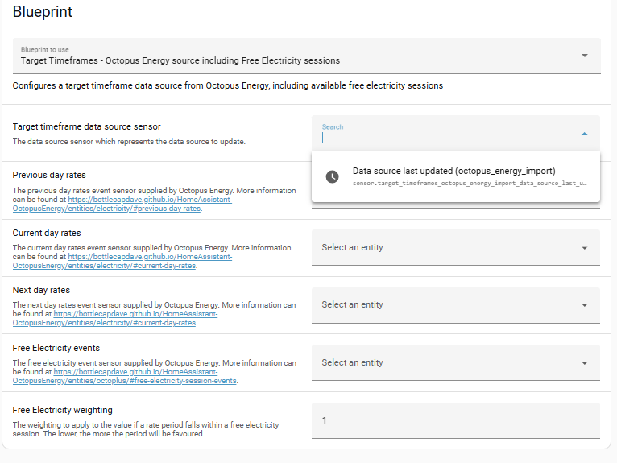
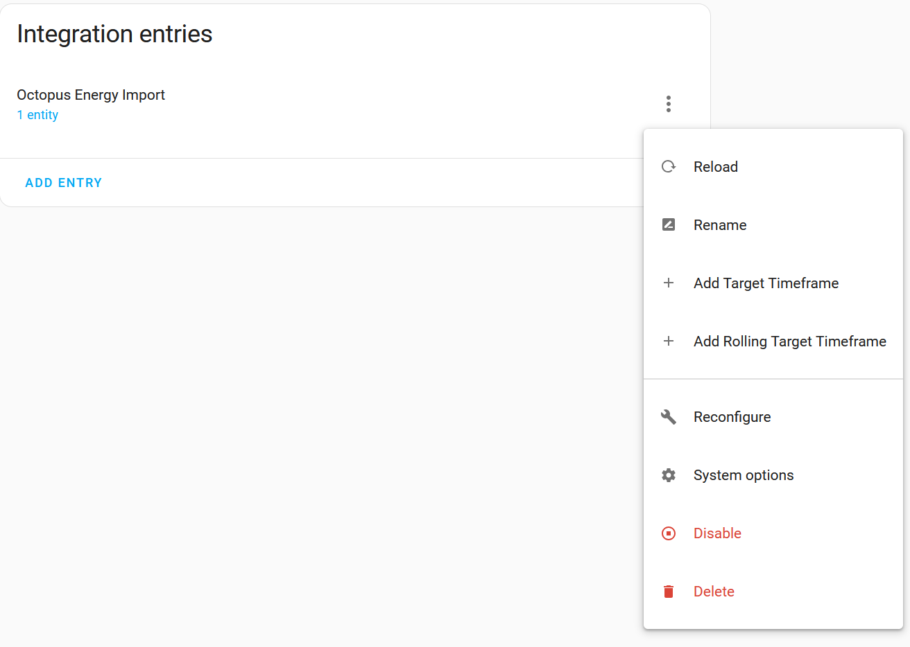

Migrating Target Rate Sensors To Target Timeframes#
It has been proposed that the target rate feature of the integration be deprecated and removed in favour of a new external integration, Target Timeframes. The full reasoning can be found in the proposal.
This guide explains how to migrate your target rate sensors to the new integration.
Installing the integration#
The first thing you need to do is install the new integration. Full instructions can be found on the website.
Setting up data sources#
Once installed, you'll need to configure the integration by setting up a data source that represents data coming from this integration. This can be done by following the link or navigating to your integrations view, clicking 'Add integration' and searching for 'Target Timeframes'. You'll need a data source for each of your meters you want to create target rate sensors for (e.g. one for import and one for export).
The recommended name is Octopus Energy Import and the recommended source id is octopus_energy_import, but you can pick whatever you want as long as it's unique within the integration.

Configuring Octopus Energy data#
Next, we'll need to get data from the Octopus Energy integration into the Target Timeframes integration. The recommended approach is an automation based on one of the available blueprints.
There are different blueprints available depending upon whether you want your target rate sensors to take account of just carbon intensity, just Octopus rates, or both. For target rate sensors that use Octopus rates there are different blueprints depending upon whether you want to take account of Octopus free electricity sessions or not.
Select the blueprint you want to use and click 'Install blueprint'. You will get a prompt to open a page in Home Assistant, click 'Open link', you'll get a second prompt to confirm you want to import the blueprint, click 'Preview blueprint' then 'Import blueprint' and the blueprint will be installed in your Home Assistant.
Next you need to create an automation using the blueprint you just imported. The automation will track when the rate entities within the Octopus Energy integration are updated and will then transform the rate data into the shape required by Target Timeframes and use the available service to add the rate data with the data source we just created. Each value in Target Timeframes will represent our rate in pounds/pence.
Click the name of the blueprint you just imported. You'll be prompted to configure the blueprint with the names of your Octopus Integration sensors. Use the dropdowns to select the appropriate Home Assistant sensor or event name:

Make sure you select the right Octopus Integration events for your target timeframe data source sensor, e.g. 'previous day rates' for an import sensor, not 'previous day rates export'.
Once you have completed the blueprint configuration click Save and this will create the automation for you, fully populated with the sensor and event names you configured. You have the option to rename the automation, add a description, category, etc if you want to.
Having setup the automation you'll need to then wait for one of the Octopus integration events to update (when the automation will then automatically run), or manually run the automation to populate the data source.
Setting up Target Rate sensors#
Now we have our data source representing Octopus Energy and data coming from this integration into Target Timeframes, it's time to now port across our target rate and rolling target rate sensors. Each type of sensor are added as a sub entry to our data source. Either click the appropriate Add button, or the three dots and choose the add option.

For porting a target rate sensor, you would select target timeframe and for porting a rolling target rate sensor, you would select rolling target timeframe.
All options within the sensors should feel familiar, as they represent what's available within this integration. Below are some noticeable differences
-
Invert targeted ratesin the Octopus Energy integration is represented byFind highest valuesin Target Timeframes. IfInvert targeted ratesis checked, for sensors using data sources targeting import meters,Find highest valuesshould be checked. IfInvert targeted ratesis checked, for sensors using data sources targeting export meters,Find highest valuesshould be checked. -
Note that the
costattributes of the Octopus Integration target rate binary sensors are renamed asvalueattributes in the Target Timeframes integration target rate binary sensors. Sooverall min costis nowoverall min value,next average costis nownext average value, etc. If you display any of these attributes on a dashboard or use them in your own automation you will need to adjust accordingly.
Warning
There is currently a bug in HA where you'll need to reload the data source when a target rate sensor is added/updated in order to see the new target rate sensor.
Info
If you are wanting to minimise updates of automations, once the target timeframe sensor has been created and you delete the old sensor from the Octopus Energy integration, you can rename the entity id to have the name of the old sensor. For example, if you have a target sensor with the entity id of sensor.target_timeframe_octopus_energy_import_dishwasher, your could rename it to sensor.octopus_energy_target_dishwasher.
Available services#
The following list of related services and their counterparts.
| OE Service | Target Timeframes Service |
|---|---|
| octopus_energy.update_target_config | target_timeframes.update_target_timeframe_config |
| octopus_energy.update_rolling_target_config | target_timeframes.update_rolling_target_timeframe_config |
| octopus_energy.register_rate_weightings | Data is now loaded as part of target_timeframes.update_target_timeframe_data_source. Therefore data can be manipulated before this service is called. A blueprint is available as an example. |